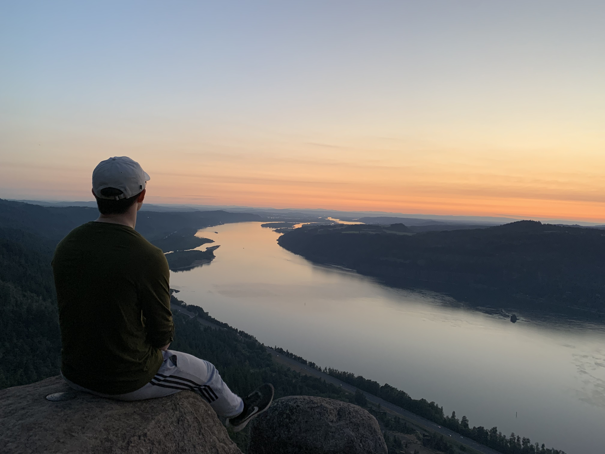

If you look to the right you will see my Resume. In High school I did a program
called Running Start, which allowed me to be a full time college student for my junior and senior years
so that I could get some credits under my belt before real college.
After that I immediately had gone to Portland State University where I studied
Biology for a semester, before I decided it wasn't for me. I then came to Brigham Young University - Idaho
Where I now study Software Engineering. I have taken programming classes in the past, and
have a basic to intermediate knowledge of all of them.
I have also used various IDE in the past so I can get a better understanding of how
different things work.

My Resume
Some more random information about me is that I love going outside. I always have, I am from the Portland
Oregon area so there's plenty of beautiful sites to see and hikes to go on. But I don't limit myself to
only going outside during the summertime. In winter you can find me on Mount Hood barreling down the mountain
on my snowboard. It's important to seperate work from play, it helps to keep a stress free life. I do this by
going outside with my friends and loved ones.

Columbia River